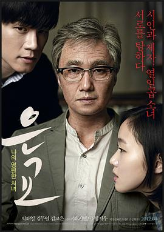

恩娇 / 은교
又名：银娇 / 萝莉塔：情陷谬思(台) / Eungyo / A Muse
前面平平淡淡，一些离谱的剧情后节奏越来越不对，然后一个误会导致矛盾越来越激烈。尺度确实挺大的。男主果然如同徒弟所说非常的高贵，最后误解化开，女主出人意料的大度。太文艺了，不知道是我的成长经历还是因为啥，我总觉得现实生活中男主一定会被讹一把。。。
作品信息
| 导演 | 郑址宇 |
| 编剧 | 郑址宇 |
| 主演 | 朴海日 / 金武烈 / 金高银 |
| 类型 | 剧情 / 爱情 |
| 制片国家/地区 | 韩国 |
| 语言 | 韩语 |
| 上映日期 | 2012-04-25(韩国) |
| 片长 | 129分钟 |
| IMDb | tt2390253 |
说过什么
2024-08-28 20:40:08
广播 · 看过 · ★★★★☆
前面平平淡淡，一些离谱的剧情后节奏越来越不对，然后一个误会导致矛盾越来越激烈。尺度确实挺大的。男主果然如同徒弟所说非常的高贵，最后误解化开，女主出人意料的大度。太文艺了，不知道是我的成长经历还是因为啥，我总觉得现实生活中男主一定会被讹一把。。。
2023-04-28 20:29:19
广播 · 想看
缪斯 hmmm
最后一次看到是 2026-08-01T11:04:18+10:00 · 豆瓣原页